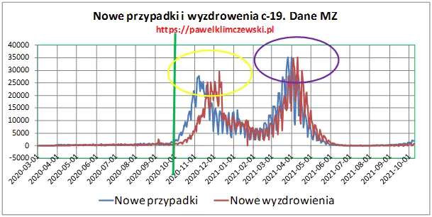

Cudotwórcy pana ministra
Cudotwórcy, a nawet całe tabuny cudotwórców. Znamy ich z gazet od dawna ale teraz mamy dowody w "papierach".
Trudno o dane z leczenia poszczególnych chorych, strzegą ich tajemnice, ale trudno ukryć prawdę przed spostrzegawczymi!

Jest w zasobach ministerstwa taka dobowa statystyka jak "nowe przypadki covid-19", którymi straszy się dzieci i dorosłych, ale obok niej jest piękny, optymistyczny raport " nowe wyzdrowienia". Liczby te są zasadniczo bardzo do siebie zbliżone, bo ich różnica to zgony, których obecnie jest około 5 na dobę. Obecnie mamy dziennie około 2 tys. "nowych zakażeń", co jest zupełnie nieistotne w świetle wiedzy o testach. Przybywa na dobę około 100 zajętych łóżek szpitalnych, co daje 0,26 przyjęć dziennie na powiat, w każdym powiecie jest szpital lub kilka, dlatego "sznury karetek " pod szpitalami nam nie grożą, chyba, że w TV.
Po roku muszę przypomnieć, że gdy rok temu pokazywano "sznury karetek" na podjazdach szpitali sytuacja epidemiologiczna w Polsce była bardzo podobna do obecnej. Na szczęście wielu niezależnych reporterów pokazało nam później, że te szpitale były puste.
Wykres pokazuje nam bardzo ciekawą zmianę między jesienią 2020 (żółty obszar) i wiosną (obszar fioletowy). Widać wyraźnie, że jesienią 2020 ludzie chorowali około 3 tygodnie, natomiast wiosną już o połowę krócej. Cud panie ministrze? Czy raczej wiosną 2021 o 10 dni za późno ci ludzie trafiali do lekarza/szpitala leczeni wcześniej przez telefon? A może to skutek jeszcze innej sztuczki urzędników robiących z ludzi zdrowych chorych i odwrotnie przy użyciu testu, które częściej pokazuje wynik fałszywy niż prawdziwy? Uzdrawiacze? Cudotwórcy ? Skąd się ich tylu bierze w każdym powiecie ?
Tego typu anomalie to bardzo dobry materiał dla trybunału, który pod hasłem Norymberga 2.0 powinien być powołany. Za tymi "anomaliami" kryją się dziesiątki tysięcy zgonów i setki tysięcy tragedii bliskich, których dotykają cierpienia pozbawionych opieki medycznej krewnych. Na ten temat pisałem tu: https://pawelklimczewski.pl/2021/09/07/130-000-przedwczesnych-smierci-kogo-zabila-reorganizacja-sluzby-zdrowia/
Paweł Klimczewski